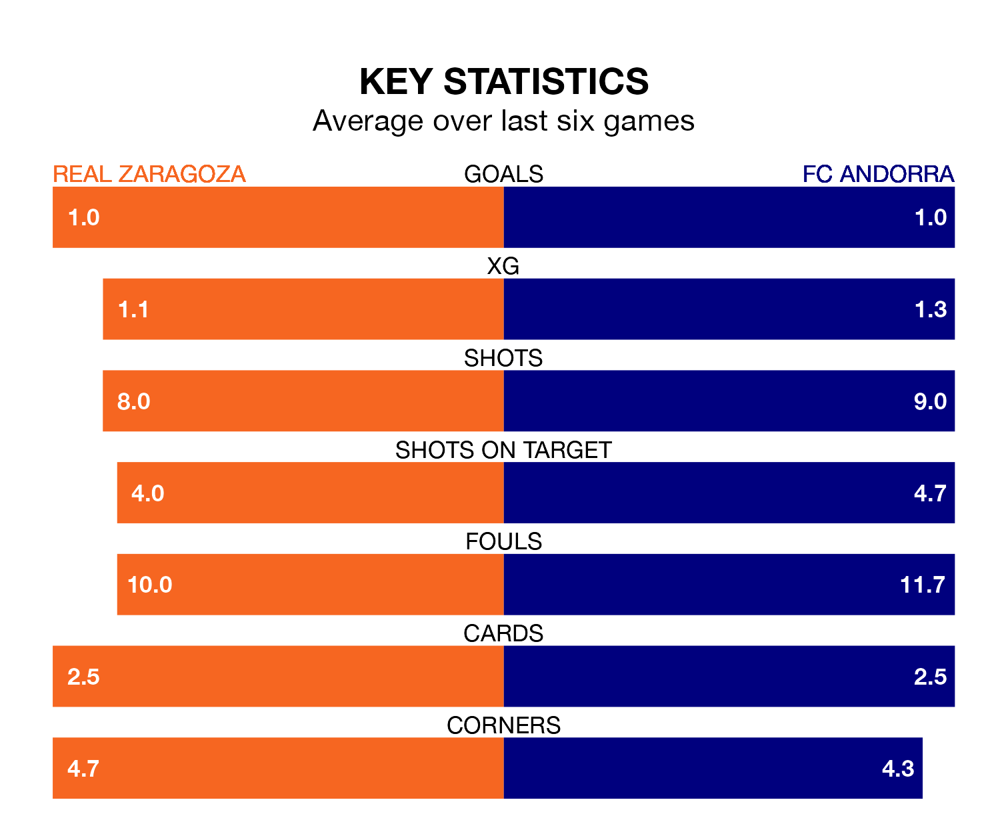

Real Zaragoza face FC Andorra on Friday seeking to protect their long unbeaten run in the Segunda División.
Zaragoza are unbeaten in five, with one win and four draws, ahead of the 7.30pm kick-off.
They face an Andorra team who have won one and drawn two over the same number of games.
Andorra are 19th in the table after 22 games, of which they have won six and drawn five, earning 23 points.
Zaragoza are five places ahead of the visitors in 14th, with seven wins and eight draws putting them on 29 points.
With 21 goals in 22 games so far this season, Andorra are scoring at below the league average rate with 1.0 goals per game. And they are conceding more than average, letting in 30 goals at a rate of 1.4 per game.
The home team are also below average scorers, with 1.0 goal per game, compared to a league average of 1.2. They have also conceded 1.0 goal per game.
In the last three years, Zaragoza and Andorra have played each other on three occasions. Zaragoza won two of them and Andorra one.
Their last meeting was on October 5, when Zaragoza won 1-0 away.
Zaragoza's last match was on Monday, a 1-1 draw against CD Eldense, with Maikel Mesa Piñero getting the goal for Zaragoza.
Andorra lost 3-2 against Leganés last time out, on Sunday, with Alejandro Orellana Gómez and Iván Gil Calero on the scoresheet.
Updated: 13:09 (UTC), 17/01/24